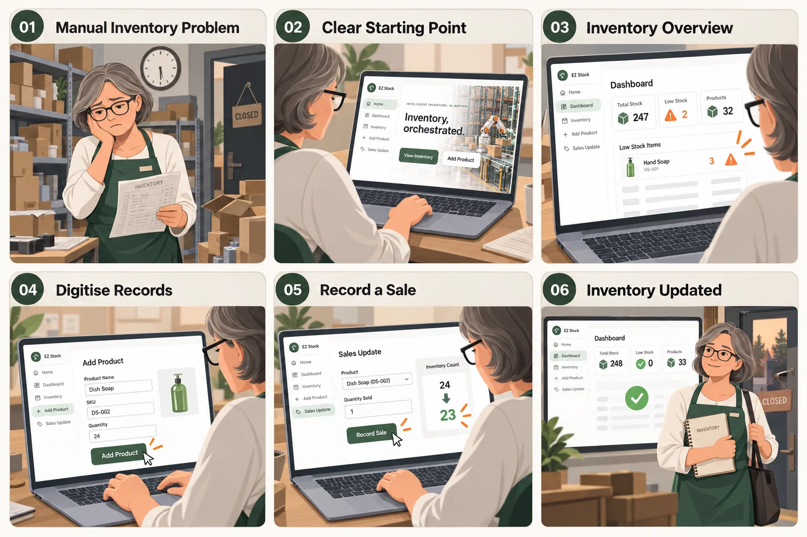
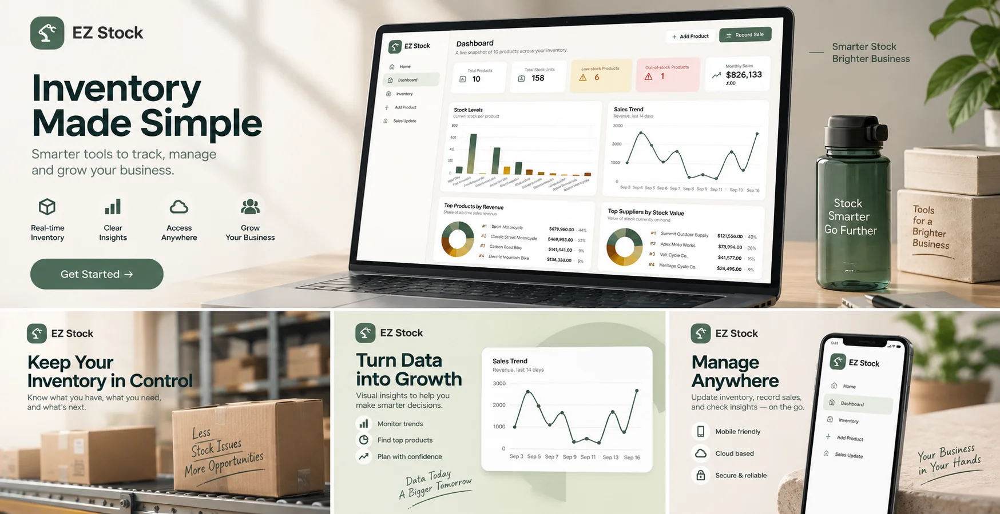

Intelligent inventory, in motion
Inventory, orchestrated.
See every item, predict every shortage, and coordinate every movement from one intelligent workspace.
- Real-time tracking
- Predictive alerts
- Automated workflows
EZ Stock
纸质台账和 Excel 表格很难跟上一家小型零售店的真实节奏——盘点耗时、数据难转录、库存记录一旦出错就直接变成损耗。 EZ Stock 是一款面向独立零售店主的库存管理网页应用，把分散、易错的纸面流程收进一套随时能查、随时能改的系统里。
设计定位
项目背景
零售店主长期依赖纸质台账和 Excel 表格管理库存。随着商品种类和数量增加，人工记录、盘点和核对的方式越来越难以 跟上门店的实际经营节奏。店主需要的是一套能够替代这些易错、难以扩展的表格记录，并且在不同设备上都能顺畅使用 的数字化方案。
业务诉求
库存管理本身就是一件耗时且繁琐的工作，而纸质记录转录成电子数据、人工盘点效率低、库存数字不准确导致的 损耗和利润损失，进一步放大了这个问题。EZ Stock 需要做的，是提供一套能够替代 Excel 表格的库存管理平台， 并且足够安全、足够直观，能够支撑店主管理和追踪与库存相关的各项任务。
洞察用户诉求
为了理解店主在日常经营中的真实困扰，我通过用户访谈收集了一手信息——一位独立经营零售店的店主， 正在寻找省钱和让库存流程自动化的方法。围绕她的行为、情绪和诉求，梳理出以下几个反复出现的痛点：
混乱的仓储环境
杂乱、缺乏秩序的库房环境，不利于养成良好的库存管理习惯。
盘点耗时过长
人手和时间都不够用，需要找到方法简化部分流程，缩短整体耗时。
纸质数据难转录
从纸质记录转录到电脑的过程繁琐易错，解决方案应当能够直接把手写库存记录数字化。
记录失准导致损耗
库存记录不准确造成了库存和利润的双重损失，系统需要能根据销售和退货实时更新库存数字。

聚焦设计目标
三个设计目标对应库存管理中依次发生的三个环节——预判、可视、协同，因此用一条连接的流程呈现。
预判 · Predictive
在库存见底之前提前预判：识别销售趋势变化，发现潜在的低库存风险，为提前补货提供依据。
可视 · Visibility
让每一件商品的状态都清晰可见：实时监控库存状态，跨库位追踪商品，及时提示低库存情况。
协同 · Orchestration
把扫描、分拣与补货整合成一套协同运作的流程，减少人工衔接环节产生的误差和延迟。

设计方案
围绕店主每天要做的具体任务，EZ Stock 被拆分成六个页面，从概览到执行层层递进：
首页
品牌化的入口页面，用一句话讲清楚产品能做什么，并引导进入仪表盘和其他核心功能。
仪表盘
库存总览、低库存/缺货数量、月度销售额，配合库存水平、销售趋势图表和热销排行，一屏看懂当前经营状况。
库存
可搜索、可筛选、可排序的商品列表，库存状态（充足 / 低库存 / 缺货）一目了然。
商品详情
交互式 3D 商品查看器、库存状况细分（良好 / 临期 / 损坏），以及销售与补货历史记录。
新增商品
带校验的新增商品表单，支持直接上传商品图片，把纸面记录变成结构化数据。
销售登记
选择商品、录入销量、预览扣减后的库存水平，确认后自动更新库存数字，避免手工核对出错。
可用性测试与迭代
在低保真原型阶段做了一轮可用性测试（4 位参与者，远程、不加引导，每人 20–30 分钟），据此定义了三个需要优先解决的问题：
用户在进入某些任务时找不到明确的起点。对应调整：补充更清晰的操作提示，帮助用户快速定位入口。
一次性呈现的信息量偏大。对应调整：把流程拆分成多个分区，加入分步（stepper）引导，让填写过程更连贯。
设置图标原本的位置不够显眼。对应调整：移动到主导航旁边，提升可见性。
视觉识别与设计系统
配色以暖白背景搭配一种沉静的墨绿作为主色，传递“可靠、踏实”的经营工具属性；状态色单独区分——琥珀色代表 低库存，红色只用于缺货这一种最需要被立刻看到的状态，避免颜色语义被稀释。
品牌主色、导航与主要操作按钮
低库存状态提示
仅用于缺货这一种状态
页面底色，降低长时间使用的视觉疲劳
正文统一使用 Inter，一款为界面阅读优化过的无衬线字体，在数据密集的仪表盘和列表页里保持清晰易读。
设计总结
EZ Stock 要解决的核心问题不是“店主不知道库存有多少”，而是记录库存的方式（纸质台账、Excel）本身就跟不上 经营节奏，进而放大了盘点耗时、数据转录出错、损耗难追溯这些问题。设计因此没有停在“做一个更好看的表格”， 而是把预判、可视、协同三个目标拆解成六个具体页面，让店主在同一套系统里完成从查库存到记销售的全部日常动作。
这也是这几个作品集项目里少数不止停留在 Figma 原型阶段的一个——上方的演示按钮打开的就是用 React 实际 实现出来的版本，从设计稿到可以点开操作的产品，是这个项目里我自己觉得收获最大的一段。
TRY IT YOURSELF
想亲自体验一下？
点击下方按钮，直接打开可交互的 EZ Stock 应用原型——库存看板、预警、增补商品全部可以点开操作。